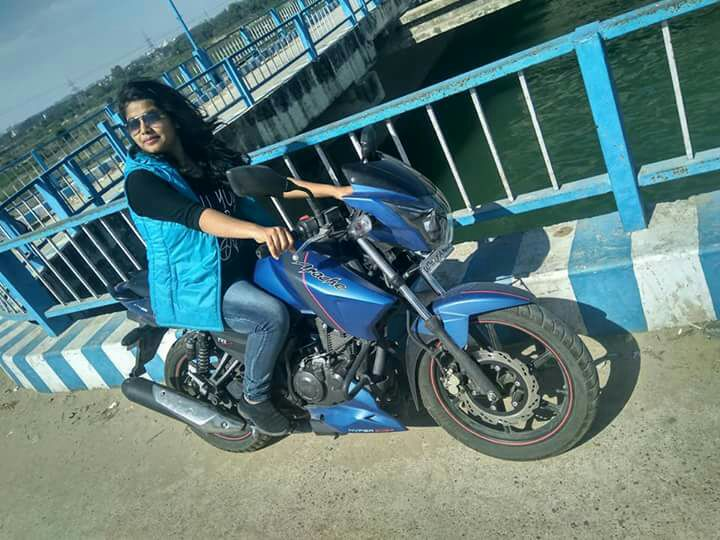
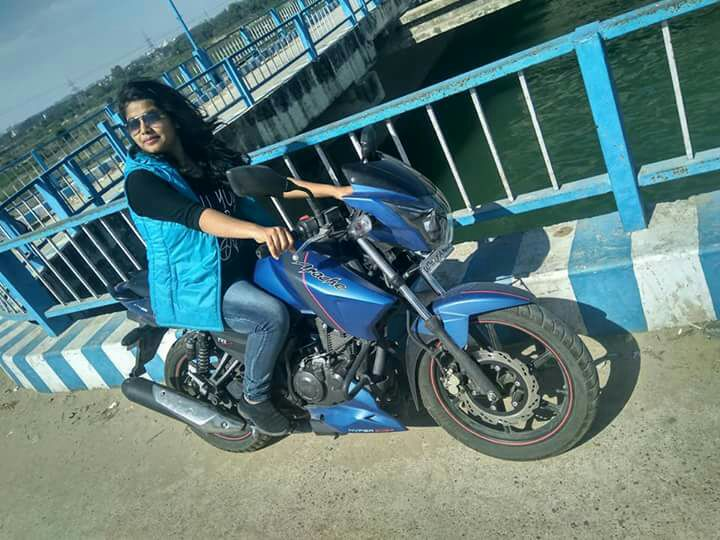

Hi, I’m Varsha Singh

I live in
far nort|
Network Engineer | VoIP Protocols: SIP, SDP, RTP, RTCP. Soft switches: VOS, VPS, ITEL & hosted server, Sonic soft switch. Routers: Cisco (26xx). Switches: Cisco (29xx, 37xx). Tools: Wire-shark, Packet Tracer, X-lite, putty, Zoiper, Nagios, Mrtg, Hyper terminal, GNS, IOU, EVE ng. Dialer: Go Autodial, Vici dial, UC- Box, Smart Dialer. Ticketing Tool: SolarWinds, Outlook. Operating System: Windows, Linux.


 
